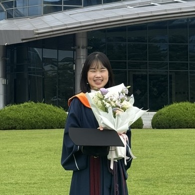

Data-Driven Decision-Making (D3M) Lab, University of Toronto
Jan 2025 – Aug 2025
email / cv / google scholar / github / linkedin
Hi, I’m Junyoung! I received my Master’s degree from the Data Intelligence and Learning Lab (DIAL Lab) at Sungkyunkwan University (SKKU), Korea, and I am currently applying to PhD programs for Fall 2027.
Outside of research, I enjoy reading books, writing blogs and going for walks.

My research focuses on resolving underspecified queries and intent, and evaluating systems when no single answer is right.
My broader interest lies in using natural language to lower the barriers between people and
information, building tools like information retrieval systems, search engines, and
recommender systems that make knowledge easier to discover and use.
Please feel free to reach out if you’re interested in my research!
* denotes equal contribution.